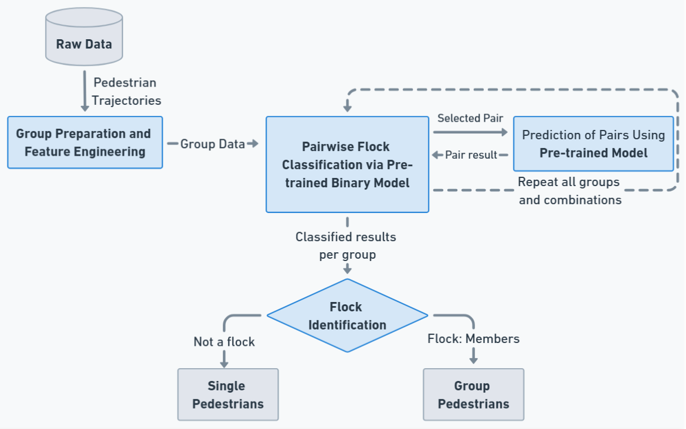

🚀 Real-Time Moving Flock Detection in Pedestrian Trajectories
Sequential deep learning for online detection of collective motion in crowds
Overview
This project studies real-time flock detection in multi-pedestrian trajectories using
sequential deep learning models (RNNs, LSTMs, and Transformers).
It follows a two‑stage pipeline:
(1) a pre‑trained binary pairwise classifier over trajectories, and
(2) a grouping stage that leverages learned representations to dynamically identify multi‑agent flocks.
Validated on real‑world group movement datasets, the method is designed to be robust across
varying sequence lengths, diverse motion patterns, and noisy environments.

Figure: Proposed method overview.
Output & Results
Online detection of moving flocks from streaming trajectories.
Pairwise embeddings → dynamic group inference (flocks, with extensibility to convoys/swarms).
Stable performance across sequence lengths and crowd conditions.
Designed for real-time operation in practical settings.